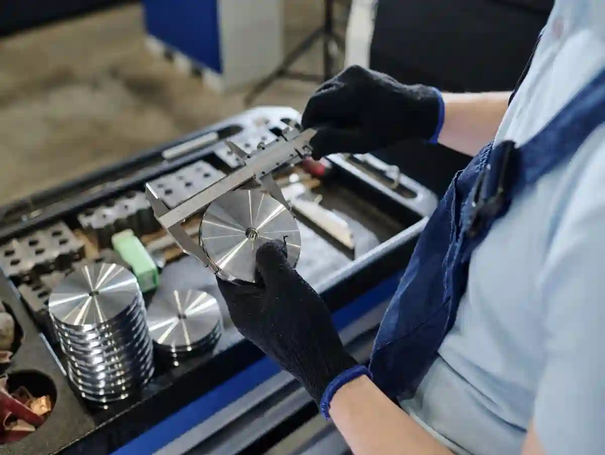
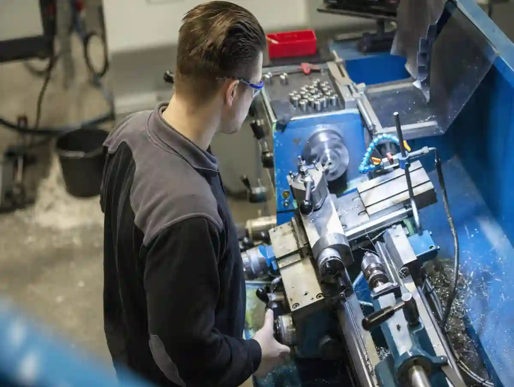
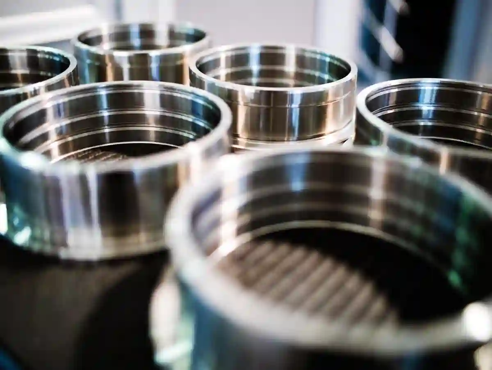
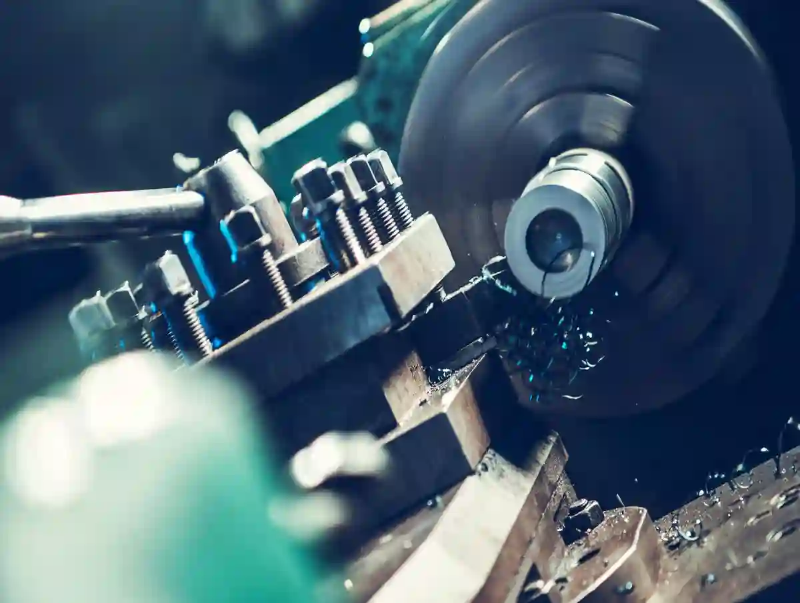

CNC Tornalama Özel Parça İmalatı: Hassas Üretimde Doğru Yaklaşım
Bir parçanın “özel” sayılması, çoğu zaman çizimdeki birkaç kritik ölçüyle başlar: dar tolerans, yüzey pürüzlülüğü, eş merkezlilik ve montaj uyumu. Üretim sahasında bu gereksinimler genellikle tek bir soruya indirgenir: Bu işi cnc tornalama özel parça yaklaşımıyla mı çözmeliyiz, yoksa farklı bir proses mi daha doğru? Yanıt; parçanın dönel geometrisi, malzeme davranışı, işleme stratejisi ve ölçüm planının birlikte değerlendirilmesidir.
Özellikle mil, burç, pim, kovan, adaptör, nozul gövdesi, bağlantı elemanı gibi dönel parçalar söz konusu olduğunda cnc tornalama özel parça üretimi; tekrarlanabilirlik, çevrim süresi ve yüzey kalitesi açısından güçlü bir seçenektir. Ancak “CNC torna var” demek tek başına yeterli değildir. Bağlama planı, takım seçimi, kesme parametreleri ve proses içi kontrol disiplininin oturması gerekir. AYMAKSAN’ın talaşlı imalat yaklaşımında bu disiplin, proje bazlı değerlendirme ve izlenebilir üretim akışıyla ele alınır.
CNC tornalama ile hassas özel parça imalatı, iş parçasının kendi ekseninde döndüğü ve kesici takımın kontrollü ilerleme ile talaş kaldırdığı süreçte; kritik ölçülerin, yüzey kalitesinin ve geometrik doğruluğun planlı biçimde yönetilmesidir. Bu yaklaşım, özellikle silindirik parça cnc ihtiyaçlarında yüksek ölçü tutarlılığı sağlar.
Özel Parçada CNC Tornalama Ne Zaman Doğru Seçimdir?
Dönel geometri baskınsa, kritik çaplar tek eksende toplanıyorsa ve yüzey kalitesi montajı doğrudan etkiliyorsa CNC torna genelde en doğru yoldur. Özellikle mil, burç, kovan gibi parçalarda tek bağlamada işleme ile eşmerkezlilik riski düşer. Adet arttıkça proses stabilitesi ve çevrim süresi avantajı büyür. Prototipten seriye giden işlerde torna ile prototip üretim yaklaşımı, üretilebilirliği baştan doğrular.
Özel parça üretiminde doğru proses seçimi, “en hızlı tezgâh” seçimi değildir; “en az riskle en stabil kaliteyi” seçmektir. CNC tornalama özel parça yöntemi genellikle şu koşullarda öne çıkar:

Dönel Geometri Baskınsa (Mil, Burç, Kovan)
Parçanın temel geometrisi dönel ise, torna operasyonu doğal olarak ana proses olur. Burada kritik nokta; tek bağlamada mümkün olduğunca fazla yüzeyin işlenmesi ve eş merkezlilik ilişkilerinin korunmasıdır. Bu tip işlerde özel torna parçaları üretimi, doğru bağlama ve referans seçimiyle ciddi hız kazanır.
Dar Tolerans + Yüzey Kalitesi Birlikte İsteniyorsa
Dar tolerans tek başına zorlayıcıdır; ancak dar toleransla birlikte düşük Ra istendiğinde süreç parametreleri daha hassas yönetilmelidir. Hassas torna imalatı için takım burun yarıçapı, ilerleme (f), devir (n) ve soğutma stratejisi birlikte ele alınır. Yüzey pürüzlülüğü kriterleri, işlevsel yüzeylerde “gereksiz pahalı” veya “yetersiz” hedeflerden kaçınmak için doğru tanımlanmalıdır.
Seri Üretime Dönebilecek Prototip Varsa
Ar-Ge prototipi çoğu zaman “tek adet” gibi görünür ama doğru ürünleşme ile seri üretime evrilir. Bu yüzden ilk günden itibaren torna ile prototip üretim sürecinde; üretilebilirlik, ölçüm planı ve operasyon sırası seri üretimi düşünerek kurulmalıdır.
Üretim Çıktısını Belirleyen 4 Kritik Parametre
Özel parçada sonuç; tezgâhtan önce proses kurgusuyla belirlenir. Birincisi doğru referans ve bağlamadır: kritik yüzeyler aynı sıfırda kalmalıdır. İkincisi takım geometrisi ve kesme parametreleridir; yanlış uç yüzey ve ölçüyü bozar. Üçüncüsü ısı yönetimi; uzun parçalar deformasyona açıktır. Dördüncüsü ölçüm planı; proses içi kontrol olmadan tutarlılık sağlanmaz. Bu çerçevede cnc tornalama özel parça kalitesi sürdürülebilir olur.
1) Referans ve Bağlama Kurgusu
En iyi tezgâh, kötü bağlamayı kurtaramaz. CNC tornalama özel parça işlerinde referans yüzeyi yanlış seçmek; eş merkezlilik kaçığı, koniklik, yüzey dalgalanması ve ölçü kaçmalarına yol açar. Sahada pratik kural şudur: “Kritik ölçüler mümkün olduğunca aynı referansta ve aynı bağlamada tamamlanmalı.”
2) Takım Seçimi ve Kesme Geometrisi
Talaş kırıcı geometriler, malzemeye göre uç sınıfı ve kaplama seçimi; hem ölçü kararlılığını hem yüzey kalitesini etkiler. Özellikle paslanmaz ve ısıl işlemli malzemelerde yanlış uç seçimi, hızlı aşınmaya ve ölçü kaçmasına neden olur.
3) Isı Yönetimi ve Deformasyon
Özel parçada “ölçü kaçtı” şikâyetinin bir kısmı aslında ısı kaynaklıdır. Uzun ince parçalar (L/D yüksek) tornalanırken parça esner, ısınır ve soğuyunca ölçü değişir. Bu yüzden metal özel parça üretimi planlanırken; puntalama, ara yatak, paso stratejisi ve soğutma, çizimin bir parçası gibi düşünülmelidir.
4) Ölçüm Stratejisi ve Proses İçi Kontrol
Sadece final ölçüm yetmez; proses içinde kritik ölçülerin kontrol noktaları belirlenmelidir. Bu yaklaşım, hatayı erken yakalayıp yeniden işleme maliyetini düşürür. AYMAKSAN’ın üretim yaklaşımında proses içi kontrol vurgusu bu nedenle önemlidir.
Konuya daha geniş perspektiften bakmak isterseniz üst kategori olarak Özel Parça İmalatı Blog sayfasında benzer teknik rehberleri bulabilirsiniz. CNC tornalamanın temel prensipleri için CNC Tornalama Teknolojisi Nedir? içeriği iyi bir başlangıçtır. Teklif okuma ve satın alma tarafı için de CNC İmalat Satın Alma Rehberi içeriği, teknik beklentileri netleştirmeye yardımcı olur.
CNC Tornalama ile Hassas Özel Parça İmalatı Süreci Nasıl İlerler?
Süreç, teknik resimde kritik ölçülerin ayrıştırılmasıyla başlar; fonksiyonel yüzeyler ve geometrik toleranslar netleştirilir. Ardından operasyon sırası kurulur: kaba talaş, yarı finiş ve finiş adımları tek bağlamayı maksimize edecek şekilde planlanır. Malzeme lotu doğrulanır, numune ölçümüyle ofset stratejisi belirlenir. Seri aşamada ara ölçüm noktaları standartlaşır. Bu disiplin, hassas torna imalatı gerektiren işlerde fireyi düşürür.
CNC tornalama özel parça işinde süreç, “tezgâha bağla ve işle” değildir. Başarılı üretim; teklif öncesi teknik analiz, proses planı, numune doğrulama ve seri üretimde stabilite adımlarından oluşur.

1) Teknik Resim Okuma ve Kritiklerin Ayrıştırılması
İlk adım, resimde kritik ölçülerin ve fonksiyonel yüzeylerin ayrıştırılmasıdır. Burada şu sorular netleşir:
- Hangi ölçüler montajı belirliyor?
- Hangi yüzeyler sızdırmazlık / rulman yatağı / sürtünme yüzeyi?
- Geometrik tolerans (eş merkezlilik, salınım, paralellik) var mı?
Bu ayrıştırma yapılmadan hassas torna imalatı hedefi “rastgele iyi işçilik” seviyesinde kalır; ölçü tutarlılığı garanti altına alınamaz.
2) Operasyon Sırası ve Tek Bağlamada Maksimum İş
Özel tornalama parçalarında en büyük kalite kazancı, operasyon sırasını doğru kurgulamaktan gelir. Örneğin:
- İlk bağlamada referans alınacak yüzeyler ve kaba talaş kaldırma,
- İkinci bağlamada kritik çaplar ve yüzeyler,
- Gerekirse finiş paso ve yüzey iyileştirme adımı.
Bu akış, silindirik parça cnc işlerinde eş merkezlilik riskini azaltır.
3) Malzeme Doğrulama ve Lot Yönetimi
Metal özel parça üretimi yapılırken malzeme standardı, sertlik aralığı ve lot sürekliliği; takım ömrünü ve yüzey kalitesini etkiler. Aynı resim, farklı malzeme lotlarında farklı davranabilir. Bu nedenle lot takibi ve gerekiyorsa ilk parça onayı (FAI) mantığı önem kazanır.
Tolerans Yönetimi: “Mikron” İstiyorsanız Süreci de Mikronla Kurmalısınız
Mikron seviyesinde tolerans, sadece ölçüm cihazı değil proses kabiliyeti demektir. Önce referans zinciri kurulur; aynı datumla işleme ve ölçüm yapılır. Takım aşınması telafisi (wear offset) için kontrol periyodu belirlenir. Isı etkisi azaltmak için paso stratejisi ve soğutma standardize edilir. Geometrik toleranslar (salınım/eşmerkezlilik) varsa yeniden bağlama minimize edilir. Bu sayede silindirik parça cnc üretiminde kararlılık korunur.
Tolerans, sadece ölçü değildir; proses kabiliyeti (Cp/Cpk) ile sürdürülebilirlik demektir. CNC tornalama özel parça için tolerans yönetimi üç katmanda ele alınır:
Boyutsal Tolerans (Çap, Boy, Kanal)
Kritik çaplar için takım aşınması telafisi (wear offset), sıcaklık stabilitesi ve ölçüm aralığı planlanmalıdır. Ölçüm tekniği (mikrometre, komparatör, iç çap komparatörü vb.) seçimi de toleransı etkiler.
Geometrik Tolerans (Salınım, Eşmerkezlilik)
Eş merkezlilik ve salınım isteniyorsa, referans yüzeyler ve bağlama stratejisi bir “tasarım kararı” kadar önemlidir. Bu toleransları tutturmanın yolu; mümkün olan en az yeniden bağlama ve doğru referanstır.
Genel Tolerans Mantığı (Çizim Basitleştirme)
Bazı projelerde çizimde her ölçü toleranslandırılmaz; genel tolerans standardı kullanılır. Bu yaklaşımı doğru okumak için CNC eğitim modülleri gibi kaynaklar, özellikle teknik ekiplerde aynı dili kurmayı kolaylaştırır. Örneğin MEB’in CNC torna modülleri temel çerçeveyi sunar: cümle içinde doğal referans olarak MEB CNC Torna Tezgâhları Modülü incelenebilir.
Yüzey Kalitesi (Ra) ve İşlev: Gereğinden Fazlası Maliyet, Azı Risk
Özel parçada yüzey kalitesi “estetik” değil, çoğu zaman işlevdir. Sızdırmazlık yüzeyinde düşük Ra gerekebilir; ancak her yüzeyi ayna gibi istemek gereksiz maliyet doğurur. Pratikte doğru yaklaşım:
- İşlevsel yüzeylerde hedef Ra,
- Diğer yüzeylerde üretilebilir ve ekonomik Ra.
Yüzey pürüzlülüğü değerlerinin uygulamalara göre nasıl değiştiğini özetleyen bir kaynak olarak şu cümle içinde kullanabileceğiniz dış bağlantı uygundur: “Yüzey hedefini belirlerken, uygulama örnekleri için CNC İşlemede Yüzey Pürüzlülüğü içeriğindeki Ra aralıklarını referans almak, gereksiz maliyeti önler.”
Silindirik Parça CNC Üretiminde Yaygın Senaryolar
Yaygın senaryolar; mil (yatak yüzeyi + salınım), burç/kovan (iç çap stabilitesi) ve kanal/diş operasyonlarıdır. Milde finiş paso, yüzey pürüzlülüğü ve eşmerkezlilik birlikte yönetilir. Burçlarda delik işleme stratejisi ve ölçüm yöntemi sonucu belirler. Kanal/dişte talaş kontrolü çapak riskini düşürür. Bu tip işlerde doğru bağlama ve takım seçimiyle özel torna parçaları hızlı ve tekrarlanabilir şekilde üretilir.
Silindirik parça cnc ihtiyaçları genelde “basit” görünür; fakat fonksiyon ve montaj ilişkisi devreye girince iş özel parçaya döner.

Mil Üretimi (Yataklama, Salınım, Sertlik)
Mil parçalarında yatak yüzeyi pürüzlülüğü, çap toleransı ve salınım birlikte düşünülür. Burada cnc tornalama özel parça yaklaşımında kritik olan; finiş pasoyu takım ömrü ve ısı yönetimiyle uyumlu planlamaktır.
Burç / Kovan (İç Çap Stabilitesi)
İç çapta stabilite için; delik işleme stratejisi, takım rijitliği ve ölçüm metodu (iç çap mikrometresi/komparatör) belirleyicidir. İç çap ölçümünde çevresel sıcaklık ve operatör tekniği bile sonucu etkileyebilir; bu yüzden ölçüm standardı belirlemek şarttır.
Kanal / Yiv / Diş (Takım Geometrisi ve Talaş Kontrolü)
Kanal açma ve diş çekme gibi operasyonlarda talaş kontrolü kritik hale gelir. Yanlış parametre; çapak, yüzey bozulması ve diş form hatasına yol açar. Bu tip özel torna parçaları için üretim öncesi kısa bir numune doğrulaması, seri üretimde fireyi azaltır.
Torna ile Prototip Üretim: “Tek Adet”te Bile Seri Üretim Disiplini
Torna ile prototip üretim yapılırken asıl hedef; parçayı sadece üretmek değil, bir sonraki iterasyonda daha hızlı ve daha stabil üretilebilir hale getirmektir. Prototipte şu disiplinler kurulursa, seri üretime geçiş kolaylaşır:
- Operasyon sırası kayıt altına alınır,
- Kritik ölçüler için ölçüm raporu formatı belirlenir,
- Takım ve parametreler dokümante edilir,
- Malzeme lotu ve sertlik bilgisi saklanır.
Bu yaklaşım, prototipi “tek seferlik iş” olmaktan çıkarır; süreç öğrenimini hızlandırır. AYMAKSAN’da prototip ve Ar-Ge desteğinin üretilebilirlik odağıyla ele alınması bu noktada değerlidir.
Hassas Torna İmalatı İçin Malzeme Davranışı ve İşlenebilirlik
Hassas torna imalatı aynı çizimde bile malzemeye göre değişir. Örnek olarak:
- Paslanmaz çeliklerde yapışma eğilimi ve yüzey “smear” riski,
- Alüminyumda çapak ve yüzey çizilmesi,
- Isıl işlemli çeliklerde takım aşınması ve ölçü drift’i.
Bu yüzden metal özel parça üretimi planlanırken malzemenin işlenebilirliği, hedef yüzey ve toleransla birlikte değerlendirilmelidir.
Yüzey pürüzlülüğü ve proses parametre ilişkisini daha akademik düzeyde okumak isteyenler için şu cümledeki dış bağlantıyı kullanabilirsiniz: “CNC tornada yüzey pürüzlülüğü ve titreşim ilişkisini Taguchi yaklaşımıyla ele alan DergiPark çalışması, proses optimizasyonunun neden ölçü kararlılığına doğrudan etki ettiğini iyi özetler.”
Özel Torna Parçalarında Kalite Kontrol ve Ölçüm: Son Kontrol Değil, Süreç Kontrol
Kalite, final ölçümde “tuttu/tutmadı” demek değil; proses içinde yön vermektir. Üretim öncesi resim revizyonu ve malzeme doğrulaması yapılır. Proses içi kontrolde kritik çaplar belirli çevrimlerde ölçülür, ofset güncellenir ve ısı kaynaklı drift izlenir. Finalde raporlama ve izlenebilirlik (lot-tarih-program) tamamlanır. Bu yaklaşım, metal özel parça üretimi projelerinde yeniden işleme maliyetini ciddi biçimde azaltır.
Ölçüm, üretimin sonunda “kabul/red” kararı vermek için yapılırsa pahalıdır; üretim sırasında yönlendirme için yapılırsa kazandırır. CNC tornalama özel parça işinde kalite kontrolü üç fazda düşünün:

Üretim Öncesi Kontrol (Hazırlık)
- Teknik resim revizyon kontrolü
- Malzeme sertliği / lot doğrulaması
- Takım ve bağlama elemanlarının uygunluğu
Proses İçi Kontrol (Ara Ölçüm)
- Kritik çaplar için belirlenen çevrimlerde ölçüm
- Takım aşınması telafisi (offset) yönetimi
- Isı etkisi gözlemi (özellikle uzun parça)
Final Doğrulama (Raporlama)
- Kritik ölçüler için rapor (müşteri standardına göre)
- Gerekirse yüzey pürüzlülüğü ölçümü
- İzlenebilirlik: lot, tarih, operatör, program
AYMAKSAN’ın “proses içi kontrol” yaklaşımı sahada hata maliyetini azaltan en net kaldıraçlardan biridir.
Teklif (RFQ) Hazırlığı: Doğru Bilgi, Doğru Fiyat
CNC tornalama özel parça tekliflerinde fiyatı belirleyen şey çoğu zaman sadece “parça süresi” değildir. Aşağıdaki bilgiler net olursa teklif hızlı ve doğru çıkar:
- 2D teknik resim + toleranslar
- Malzeme standardı ve sertlik (varsa)
- Adet ve tekrar sipariş ihtimali
- Yüzey işlemleri / kaplama (varsa)
- Ölçüm/raporlama beklentisi
Bu konuyu satın alma tarafında sistematik okumak için CNC İmalat Satın Alma Rehberi sayfası, teknik şartnamenin nasıl netleştirileceğini anlatır.
Saha Hataları: En Çok Nerede Kaçıyor?
Sahada en sık kaçan yerler üç başlıkta toplanır. Birincisi ölçü drift’i: takım aşınması ve ısı birikimi telafi edilmezse çaplar kayar. İkincisi eşmerkezlilik/salınım: yeniden bağlama arttıkça referans zinciri bozulur. Üçüncüsü çapak ve yüzey bozulması: yanlış parametre veya talaş kontrolü montajı zorlaştırır. Bu riskler, ara ölçüm standardı ve doğru operasyon sırasıyla yönetilir; özellikle cnc tornalama özel parça işlerinde.
Ölçü Kaçması (Drift) – Takım Aşınması ve Isı
Uzun çevrimlerde ölçü kaçması genellikle takım aşınması + ısı kombinasyonudur. Çözüm; ara ölçüm aralığını belirlemek ve telafiyi standardize etmektir.
Eşmerkezlilik – Yeniden Bağlama Riski
Eşmerkezlilik isteyen parçada her yeniden bağlama, risktir. Çözüm; mümkünse tek bağlamada iş bitirmek veya referans stratejisini “sıfır tolerans” ciddiyetinde kurmaktır.
Çapak – Talaş Kontrolü ve Parametre
Özellikle alüminyum ve bazı paslanmazlarda çapak, montajı bozar. Çözüm; talaş kırıcı geometri, uygun ilerleme ve gerekirse çapak alma standardıdır.
Eğer işiniz dönel geometri ağırlıklıysa ve üretimi tek çatı altında planlamak istiyorsanız, kapsamlı üretim yaklaşımı için Özel Talaşlı İmalat sayfasındaki süreç yapısı, tornalama + ölçüm + tamamlayıcı operasyonları birlikte görmenizi sağlar.
CNC Tornalama Özel Parça Üretiminde “Sürdürülebilir Kalite” Nasıl Kurulur?
Sürdürülebilir kalite için iş akışı standartlaştırılmalı ve bilgi kaybı engellenmelidir. Operasyon sırası, takım listesi ve parametre aralıkları dokümante edilir; kritik ölçüler için kontrol planı oluşturulur. Tekrar siparişlerde aynı referans mantığı korunur, ölçüm raporu formatı sabitlenir. Malzeme lotu değişiminde ilk parça onayıyla süreç yeniden doğrulanır. Bu yapı kurulduğunda torna ile prototip üretim bile seri üretime sorunsuz taşınır.
Bir kez tutturulan ölçü, tekrar siparişte kaçıyorsa sorun “o gün” değil “sistem” problemidir. CNC tornalama özel parça işini sürdürülebilir kaliteyle yönetmek için üç yapı taşı gerekir:
Standart İş Akışı + Dokümantasyon
- Operasyon sırası sabitlenir
- Kritik ölçü planı tanımlanır
- Parametre ve takım bilgisi kayıt altına alınır
Makine Parkı Uygunluğu ve Entegrasyon
Özel parçanın bazıları sadece tornalama ile bitmez; freze/dik işleme, kaynak/montaj gibi tamamlayıcı adımlar gerekebilir. Bu noktada entegre üretim yapısı; termin güvenilirliği ve kalite sürekliliği sağlar. AYMAKSAN’ın makine parkı ve entegre hizmet yaklaşımı bu nedenle rekabette fark yaratır.
Ölçüm Kültürü ve Geri Besleme
Kalite kontrol sadece “kontrol” değil “geri besleme”dir. Ölçümden gelen veri, parametreleri ve telafi stratejisini beslemelidir.
Sık Sorulan Sorular
CNC tornalama özel parça üretimi kaç günde çıkar?
Termin; malzeme temini, operasyon sayısı, ölçüm/raporlama ve kaplama gibi dış süreçlere bağlıdır. Tek bağlamada tamamlanan parçalar hızlı çıkar; çok operasyonlu ve raporlu işler daha planlı ilerler.
Hangi parçalar CNC tornalamaya daha uygundur?
Dönel geometri ağırlıklı (mil, burç, kovan, pim, adaptör, nozul gövdesi) parçalar CNC tornalamaya uygundur. Kare prizmatik yüzey ağırlıklı parçalar çoğunlukla freze/dik işleme ister.
Prototip mi seri mi daha avantajlı?
Prototipte amaç doğrulama; seride amaç stabilite ve maliyet optimizasyonudur. En iyi sonuç, prototipi seri üretim disiplininde kurgulamakla alınır (dokümantasyon + ölçüm planı).
Sektörün Türkiye’deki görünümünü ve tedarik ekosisteminin yönünü okumak için şu cümledeki bağlantı kullanılabilir: “Özellikle otomotiv tedarik zincirinde kalite ve standardizasyon beklentileri artarken, Sanayi ve Teknoloji Bakanlığı Otomotiv Sektör Raporu bu dönüşümün çerçevesini net biçimde ortaya koyuyor.”
Sonuç
Özetle, cnc tornalama özel parça üretiminde başarı; tezgâh gücünden önce proses gücüdür. Doğru referans ve bağlama, doğru takım ve parametre, iyi ısı yönetimi ve proses içi kontrol birleştiğinde; hassas torna imalatı gerçek anlamda sürdürülebilir hale gelir. Dönel geometrilerde silindirik parça cnc üretimi, doğru kurguyla hem hızlı hem güvenilir çalışır. Projeyi prototipten seri üretime taşıyacak disiplin kurulursa, torna ile prototip üretim bile uzun vadeli maliyeti düşürür. Ve en önemlisi; özel torna parçaları üretiminde kalite, “son kontrolde yakalamak” değil “süreçte yönetmek”tir.